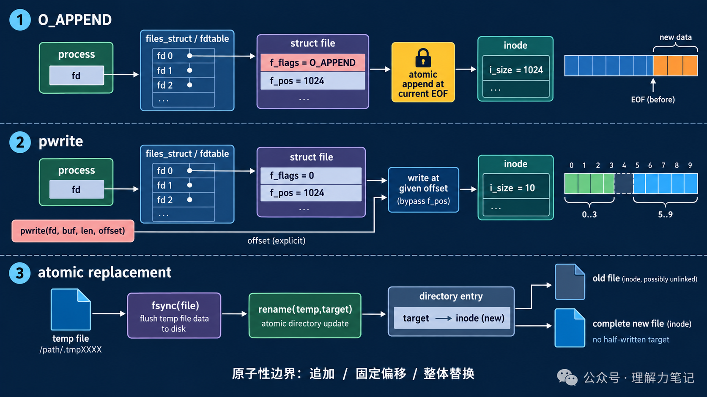

O_APPEND、pwrite 与 rename两个进程如果都先 lseek(fd, 0, SEEK_END)，再调用 write，它们看到的文件尾可能相同，后一次写入就会覆盖前一次的预期位置。问题不在“有没有调用 lseek”，而在定位和写入不是一个不可分割的动作。
结论： 追加日志时用
O_APPEND，让每次write在内核中先定位到当前文件尾再写；固定偏移写入时用pwrite，不要共享lseek改变的文件偏移；整体替换配置文件时，先写临时文件并同步，再用rename一次换名。三者解决的是不同的原子性问题。
这篇文章怎么读？
无论你为什么点进来，都能各取所需——只解决手头问题，看第一章就够；想彻底搞懂，再往下读。
| 你是谁 | 看哪一章 | 会得到什么 |
|---|---|---|
| 搜索者 / 被推荐者 | 第一章 · 先解决问题 | 最快的答案（知其然） |
| 学习者 | 第二章 · 机制解释 | 底层的来龙去脉（知其所以然） |
| 编程者 | 第三章 · 工程使用 | 正确、能直接用的写法 |
| 求职者 | 第四章 · 面试提炼 | 会怎么问、怎么答（按需） |
atomic_io_demo.c 做三件事：两个子进程各追加 5 条记录；用 pwrite 在偏移 0 和 5 写入两个互不重叠的片段；把完整内容写进临时文件后同步，再用 rename 替换目标文件。
追加部分的关键是打开标志：
固定位置写入则直接传入偏移，不改变共享的 f_pos：
环境是 macOS 14.8.8、Apple clang 16.0.0。完整可运行代码在 atomic_io_demo.c：
这个实验只证明本次运行观察到的系统调用结果：每条追加记录都被计数，pwrite 写到了指定偏移，替换后目标文件内容完整。它没有证明任意文件系统上的大块写入都不会被拆分，也没有模拟进程崩溃或断电。
lseek + write 为什么会竞争普通 lseek 先修改打开文件对象里的 f_pos，随后 write 再使用这个偏移。两个进程若各自持有指向同一 struct file 的描述符，或者各自计算出相同的文件尾，定位和写入之间都存在调度窗口；另一个进程可以在窗口内改变偏移或写入数据。

O_APPEND 把“取当前文件尾并完成本次写入”绑定在一次写操作的内核路径中。它保证的是每次写入开始位置的追加语义；如果应用把一条记录拆成多次 write，记录之间仍可能交错，所以日志记录应尽量一次写完，并处理短写和错误。
pwrite(fd, buf, count, offset) 把偏移作为本次调用的参数，不使用也不更新打开文件对象的当前偏移。多个调用者只要分配了不重叠的区间，就不会因为共享 f_pos 而互相移动位置；区间重叠仍然是应用层的冲突。
rename(old, new) 在同一文件系统内更换目录项指向：读者通常看到旧文件或新文件，而不是“目标文件已经截断但内容只写了一半”。这解决的是名字指向的整体替换，不等于临时文件内容已经持久化；需要抗崩溃时，先 fsync 临时文件，成功 rename 后还要按平台要求同步父目录。
原子性回答“并发读写时能不能看到中间状态”；持久化回答“崩溃或断电后数据是否还在”。O_APPEND 和 rename 都不能替代 fsync。第 5 期讨论的同步边界，仍然适用于本期的临时文件替换流程。
O_WRONLY | O_CREAT | O_APPEND，并设置最小必要权限。write/write_all 提交；不要把“取文件尾”单独写成 lseek。write 返回短写时继续写剩余部分；返回 -1 且 errno == EINTR 时重试，其他错误交给上层处理。O_APPEND 不会替你设计跨多次调用的事务。pwrite 管理区间pwrite 适合写文件头、预分配区域或按块更新。调用者需要维护“谁拥有哪一段偏移”的约定，并检查 ssize_t 返回值是否等于请求长度。若两个线程写同一范围，仍需锁、版本号或更高层的冲突解决策略。
可靠的配置替换通常按这个顺序：
write 返回值，并对临时文件调用 fsync。rename(temp, target)，检查返回值。不要先 open(target, O_TRUNC) 再慢慢写：进程在中途退出时，读者只能看到被截断的半成品。
lseek 和 write 分开调用会产生竞争窗口。O_APPEND 把每次写入定位到文件尾的动作绑定起来，适合追加；pwrite 把偏移作为本次调用参数，适合不共享 f_pos 的固定位置写；rename 用一次目录项替换实现完整文件切换。它们解决并发可见性，不自动提供断电后的持久化保证。
O_APPEND 能保证一整条日志永不交错吗？ 只保证一次写调用的追加定位语义；应用若把记录拆成多次写，仍可能交错，长度和文件系统边界也要验证。
pwrite 会改变当前文件偏移吗？ POSIX 语义下不会；它使用显式 offset，因此不依赖共享的 f_pos。
rename 后是不是一定不丢？ 不是。它解决名字指向的原子替换；要提高崩溃恢复能力，还需同步临时文件以及按平台同步父目录。
转载说明：本文用于技术学习与交流，转载请保留原文与出处。
本文为公众号「理解力笔记」原创。转载请联系作者，并保留出处。